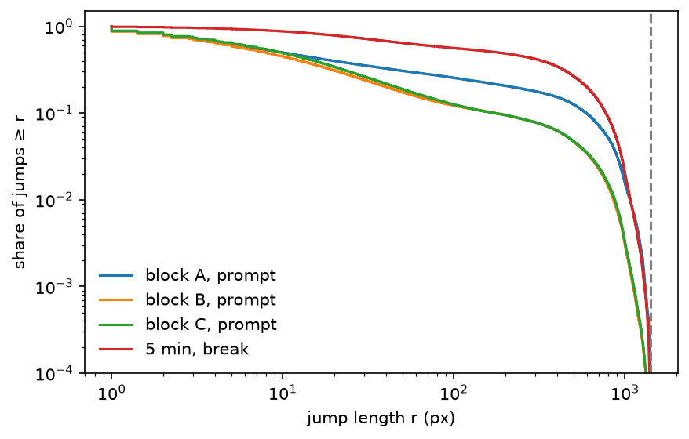

Chapter 2 asked when people act. This chapter asks where: when an account places a pixel and then another, how far away is the second one? Studies of human travel report heavy-tailed jump lengths, often called Lévy-flight-like, and a strong pull back to places already visited (studied under another name; Brockmann et al. 2006, González et al. 2008, Song et al. 2010, see Appendix B; not yet read for this book). r/place is a clean place to look, with one caveat that shapes everything: the canvas is a bounded square 1001 pixels across, so no jump can exceed about 1,415 pixels.
import numpy as npimport polars as plimport matplotlib.pyplot as pltfrom scipy import statsimport rplace17 as rfrom rplace17 import tailsd = r.load()J = r.jumps(d) # one row per pair of consecutive placements of an accountclean = J.filter(pl.col("c0") == pl.col("c1")) # gaps that start and end in the same cooldown periodprint(f"{J.height:,} jumps; {clean.height:,} within one cooldown period")
15,392,504 jumps; 14,663,436 within one cooldown period
4.1 What a jump is
A jump is the displacement \((dx, dy)\) between an account’s consecutive placements, with length \(r = \sqrt{dx^2 + dy^2}\) in pixels. How far people jump depends on how long they waited and on the rules at the time, so the pre-registration fixed strata in advance:
gap:prompt (placed again within a minute of being allowed), later (up to an hour), after a break;
cooldown period: five-minute periods (primary), ten-minute periods (secondary);
time block (five-minute periods): A, the first hours after launch; B, 04-01 21:30 to 04-02 21:30; C, the last day.
The primary strata are prompt jumps in blocks A, B and C.
strata = [(f"block {b}, prompt", clean.filter((pl.col("block") == b) & (pl.col("gap_class") =="prompt"))) for b in"ABC"]strata += [(f"5 min, {g}", clean.filter((pl.col("period") ==300) & (pl.col("gap_class") == g))) for g in ("later", "break")]strata += [("10 min, prompt", clean.filter((pl.col("period") ==600) & (pl.col("gap_class") =="prompt")))]rows = []for label, s in strata: dx, dy, rr = s["dx"].to_numpy().astype(float), s["dy"].to_numpy().astype(float), s["r"].to_numpy() rows.append({"stratum": label, "jumps": f"{s.height:,}", "accounts": f"{s['user_id'].n_unique():,}","same pixel (r = 0)": f"{(rr ==0).mean():.1%}", "median r (px)": f"{np.median(rr):.0f}","r ≤ 20 px": f"{(rr <=20).mean():.0%}", "sd of dx (px)": f"{dx.std():.0f}","excess kurtosis dx, dy": f"{stats.kurtosis(dx):.1f}, {stats.kurtosis(dy):.1f}"})r.table(pl.DataFrame(rows))
stratum
jumps
accounts
same pixel (r = 0)
median r (px)
r ≤ 20 px
sd of dx (px)
excess kurtosis dx, dy
block A, prompt
290,168
67,483
1.4%
9
61%
212
7.6, 7.7
block B, prompt
3,081,814
302,570
2.2%
7
70%
126
20.5, 22.5
block C, prompt
2,592,654
275,088
4.4%
9
67%
126
21.0, 23.1
5 min, later
5,101,048
522,773
2.0%
17
53%
188
8.2, 8.6
5 min, break
1,522,443
523,236
0.9%
170
22%
295
1.7, 1.7
10 min, prompt
736,574
149,854
1.7%
10
63%
159
12.5, 12.9
fig, ax = plt.subplots(figsize=(6.5, 4))for label, s in strata[:3] + [strata[4]]: x = s["r"].to_numpy(); x = x[x >0] cx, cp = tails.ccdf(x) ax.step(cx, cp, where="post", label=label)ax.axvline(np.hypot(1000, 1000), ls="--", color="grey")ax.set_xscale("log"); ax.set_yscale("log"); ax.set_ylim(1e-4, 1.5)ax.set_xlabel("jump length r (px)"); ax.set_ylabel("share of jumps ≥ r")ax.legend(frameon=False)plt.show()

Figure 4.1: Share of jumps longer than r (log scales): prompt jumps in each time block, and jumps after a break. The dashed line is the largest jump the canvas allows.
Most prompt jumps are short: the median is a few pixels and most stay within 20. But the components have an enormous excess kurtosis, which is the signature of a mixture: many tiny steps and some very long jumps. After a break the picture flips: the median jump is a large fraction of the canvas, and the kurtosis drops towards that of points scattered over a square. (These moments are descriptive only: on a bounded canvas every moment is finite, so moments cannot diagnose a tail here.)
4.2 Is there a Lévy-like tail?
For each primary stratum we fit the jump lengths with the method of Chapter 2 (rplace17.tails), on three nulls fixed in advance, each keeping something real and removing the rest:
N1 geometry: each jump keeps its origin and lands anywhere on the canvas, uniformly.
N2 own places, random order: each account’s placements in the block are shuffled in time and the jumps recomputed; the account’s footprint stays, its sequence goes.
N3 two scales: each account keeps its share of local jumps (r ≤ 20 px); local jumps are redrawn from an exponential with the account’s own mean local length (capped at 20 px, a detail the pre-registration did not specify), far ones as in N1. It mixes two scales with no heavy tail in either.
R_LOC, NREP =20, 20rng = np.random.default_rng(0)def uniform_dest(x0, y0):return np.hypot(rng.integers(0, 1001, len(x0)) - x0, rng.integers(0, 1001, len(y0)) - y0)def far_uniform(x0, y0, rmin): out, todo = np.empty(len(x0)), np.arange(len(x0))whilelen(todo): rr = uniform_dest(x0[todo], y0[todo]); ok = rr > rmin out[todo[ok]] = rr[ok]; todo = todo[~ok]return outdef own_places_random_order(s, block_rows): need = s.group_by("user_id").len().rename({"len": "need"}) p = block_rows.join(need, on="user_id", how="semi") p = (p.with_columns(pl.Series("u", rng.random(p.height))).sort("user_id", "u") .with_columns(pl.col("x").shift(1).over("user_id").alias("x0"), pl.col("y").shift(1).over("user_id").alias("y0")) .drop_nulls("x0") .with_columns(((pl.col("x").cast(pl.Float64) - pl.col("x0")) **2+ (pl.col("y").cast(pl.Float64) - pl.col("y0")) **2).sqrt().alias("r")) .join(need, on="user_id") .with_columns(pl.int_range(pl.len()).shuffle(seed=int(rng.integers(1e9))).over("user_id").alias("rank")) .filter(pl.col("rank") < pl.col("need")))return p["r"].to_numpy()def two_scales(s): df = pl.DataFrame({"u": s["user_id"], "r": s["r"], "local": s["r"] <= R_LOC}) acc = df.group_by("u").agg(pl.col("local").mean().alias("p"), pl.col("r").filter(pl.col("local")).mean().alias("m")) j = df.join(acc, on="u", how="left") is_local = rng.random(df.height) < j["p"].to_numpy() out = np.empty(df.height) out[is_local] = np.minimum(rng.exponential(j["m"].fill_null(1.0).to_numpy()[is_local]), R_LOC) out[~is_local] = far_uniform(s["x0"].to_numpy()[~is_local], s["y0"].to_numpy()[~is_local], R_LOC)return outdef tail_summary(x): x = x[x >0] f = tails.fit(x); c = tails.compare(x, f) g =lambda m, col: c.filter(pl.col("model") == m)[col][0]return f, {m: (g(m, "normalised R"), g(m, "p")) for m in ("exponential", "lognormal", "stretched exponential")}, g("truncated power law", "p")fit_rows, decision_rows = [], []for (name, a, b), (label, s) inzip(r.BLOCKS, strata[:3]): sp = s.filter(pl.col("r") >0) block_rows = d.filter(pl.col("t_us").is_between(r._us(a), r._us(b), closed="left")) series = {"data": sp["r"].to_numpy(), "N1 geometry": uniform_dest(sp["x0"].to_numpy(), sp["y0"].to_numpy()),"N2 own places, random order": own_places_random_order(sp, block_rows)} n3 = [two_scales(sp) for _ inrange(NREP)] series["N3 two scales"] = n3[0]for kind, x in series.items(): f, alts, p_tpl = tail_summary(x) fit_rows.append({"block": name, "": kind, "xmin (px)": f"{f.xmin:.0f}", "alpha": f"{f.alpha:.2f}", "decades": f"{f.decades:.2f}","edge": "yes"if f.at_boundary else"",**{f"R {m[:11]}": f"{alts[m][0]:+.0f}"for m in alts}, "p trunc. PL": f"{p_tpl:.1g}"})if kind =="data": f_data, alts_data, p_tpl_data = f, alts, p_tpl far = series["data"][series["data"] > R_LOC] far3 = [x[x > R_LOC] for x in n3] D_data = stats.ks_2samp(far, np.concatenate(far3)).statistic D_null =max(stats.ks_2samp(far3[i], far3[j]).statistic for i inrange(NREP) for j inrange(i +1, NREP)) c1 =all(R >0and p <0.05for R, p in alts_data.values()) and p_tpl_data >=0.05 c2 =1< f_data.alpha <3 c3 = f_data.decades >=1.5andnot f_data.at_boundary c4 = D_data > D_null yes =lambda v: "yes"if v else"no" decision_rows.append({"block": name, "1. power law beats all": yes(c1), "2. 1 < alpha < 3": yes(c2),"3. range ≥ 1.5 decades": yes(c3), "4. beyond two scales": yes(c4),"KS data vs N3": f"{D_data:.3f}", "largest KS N3 vs N3": f"{D_null:.3f}","Lévy-flight-like": yes(c1 and c2 and c3 and c4)})r.table(pl.DataFrame(fit_rows))
block
xmin (px)
alpha
decades
edge
R exponential
R lognormal
R stretched e
p trunc. PL
A
data
909
8.47
0.19
-25
-14
-15
6e-106
A
N1 geometry
932
11.30
0.18
-40
-22
-23
2e-260
A
N2 own places, random order
915
8.70
0.19
-33
-19
-20
1e-180
A
N3 two scales
933
10.82
0.17
-31
-17
-17
2e-150
B
data
8
1.60
2.25
+589
-183
-191
0
B
N1 geometry
945
12.74
0.17
-79
-44
-46
0
B
N2 own places, random order
956
11.48
0.17
-38
-23
-24
3e-266
B
N3 two scales
943
12.71
0.17
-41
-23
-24
5e-295
C
data
10
1.63
2.15
+501
-163
-171
0
C
N1 geometry
951
12.89
0.17
-78
-43
-44
0
C
N2 own places, random order
942
11.69
0.18
-26
-17
-18
5e-149
C
N3 two scales
958
12.94
0.16
-41
-22
-23
7e-277
The pre-registered decision, for each block:
r.table(pl.DataFrame(decision_rows))
block
1. power law beats all
2. 1 < alpha < 3
3. range ≥ 1.5 decades
4. beyond two scales
KS data vs N3
largest KS N3 vs N3
Lévy-flight-like
A
no
no
no
yes
0.389
0.006
no
B
no
yes
yes
yes
0.600
0.003
no
C
no
yes
yes
yes
0.633
0.002
no
No block passes, so the pre-registered answer is: no evidence of Lévy-flight-like jumps. But the details are worth reading:
In the first hours (block A) there is no stable tail at all: the fit only finds the last stretch before the edge of the canvas, the same place where the geometry null puts its “tail”.
In blocks B and C there is a long, broad stretch, from about ten pixels to the edge of the canvas, with \(\alpha\) around 1.6 over more than two decades, and it is nothing like the nulls: far jumps differ from the two-scale null by far more than its replicates differ from each other. All three nulls put their only “tail” at the canvas edge.
But it is not a power law: the lognormal and the stretched exponential describe it much better, and a power law with a cutoff beats the pure one. Condition 1 fails.
So jump lengths are broad, far broader than geometry, a shuffled footprint, or a simple local-plus-random mixture would give, but their shape is not a power law.
4.2.1 Checks on the decision
The local radius. The two-scale null splits jumps at R_loc = 20 px; the pre-registration named 10 and 40 px as sensitivity checks, and we add 50. Condition 4 (data far from the two-scale null) is recomputed for each:
rows_rl = []for (name, a, b), (label, s) inzip(r.BLOCKS, strata[:3]): sp = s.filter(pl.col("r") >0) data_r, x0, y0 = sp["r"].to_numpy(), sp["x0"].to_numpy(), sp["y0"].to_numpy()for R in (10, 20, 40, 50): far = data_r[data_r > R] reps = []for _ inrange(5): keep = rng.random(len(data_r)) >= np.mean(data_r <= R) # the account-level local share, pooled reps.append(far_uniform(x0[keep], y0[keep], R)) D_d = stats.ks_2samp(far, np.concatenate(reps)).statistic D_n =max(stats.ks_2samp(reps[i], reps[j]).statistic for i inrange(5) for j inrange(i +1, 5)) rows_rl.append({"block": name, "R_loc (px)": R, "KS data vs null (far jumps)": f"{D_d:.3f}","largest KS null vs null": f"{D_n:.4f}", "condition 4": "holds"if D_d > D_n else"fails"})r.table(pl.DataFrame(rows_rl))
block
R_loc (px)
KS data vs null (far jumps)
largest KS null vs null
condition 4
A
10
0.492
0.0054
holds
A
20
0.387
0.0061
holds
A
40
0.279
0.0056
holds
A
50
0.242
0.0071
holds
B
10
0.707
0.0012
holds
B
20
0.600
0.0014
holds
B
40
0.429
0.0015
holds
B
50
0.363
0.0023
holds
C
10
0.729
0.0015
holds
C
20
0.633
0.0019
holds
C
40
0.470
0.0024
holds
C
50
0.405
0.0029
holds
Condition 4 holds at every radius (here the local share is pooled over each block rather than kept per account, a simplification for the sensitivity check). The verdict, which fails on condition 1, does not depend on R_loc.
Is it where the crowd is? A different explanation of broad jumps is attraction: people jump to wherever things are happening. This null, not in the pre-registration and so exploratory, lands each jump on the place of a random placement by anyone in the ten minutes before it.
Attraction to the crowd’s recent activity reproduces nothing: recent activity is spread over the whole canvas, so jumps drawn towards it are as long as random ones. A local attraction null (towards recent activity near the origin) would need a radius, and choosing one builds in the locality it is meant to explain, so we do not fit it.
Direction. Straight-edged artworks such as flags would make jumps along rows and columns more common.
rows_dir = []for label, s in strata[1:3]: sp = s.filter(pl.col("r") >20) ang = np.degrees(np.arctan2(np.abs(sp["dy"].to_numpy()), np.abs(sp["dx"].to_numpy()))) x1u, y1u = rng.integers(0, 1001, sp.height), rng.integers(0, 1001, sp.height) dxu, dyu = x1u - sp["x0"].to_numpy(), y1u - sp["y0"].to_numpy() far_u = np.hypot(dxu, dyu) >20 ang_u = np.degrees(np.arctan2(np.abs(dyu[far_u]), np.abs(dxu[far_u]))) near_axis =lambda a_: np.mean((a_ <5) | (a_ >85)) rows_dir.append({"stratum (jumps > 20 px)": label, "within 5° of an axis, data": f"{near_axis(ang):.1%}","geometry null": f"{near_axis(ang_u):.1%}", "exactly along a row or column, data": f"{((sp['dx'] ==0) | (sp['dy'] ==0)).mean():.1%}"})r.table(pl.DataFrame(rows_dir))
stratum (jumps > 20 px)
within 5° of an axis, data
geometry null
exactly along a row or column, data
block B, prompt
20.8%
11.2%
3.7%
block C, prompt
22.0%
11.3%
3.9%
About twice as many far jumps run within 5° of a row or column as random destinations would give: consistent with people working along straight edges, though this check cannot say whose edges.
block B, prompt: correlation of consecutive log jump lengths 0.41; with each account's jumps shuffled 0.29
Consecutive jump lengths are correlated (0.41). Part of that is that accounts differ, some mostly local and some roaming: shuffling each account’s own jumps keeps that and leaves 0.29. The rest is sequence: a long jump makes another long one more likely. One reading, not tested here, is someone moving to a new area and looking around.
4.3 How far does each account range?
The radius of gyration of an account is the root-mean-square distance of its placements from their centre: how spread out its footprint is over the whole event.
Figure 4.2: Radius of gyration of accounts against their number of placements (median and interquartile range per band).
Even though most prompt jumps are short, a typical account’s footprint spans a few hundred pixels: people work in one place for a while, then move. The busiest accounts are the most focused, with the smallest radius.
4.4 Do people come back?
def return_share(df):"""Share of placements within 5 px of one of the account's own previous 10 placements.""" o = df.sort("user_id", "t_us") dmin =Nonefor k inrange(1, 11): dk = ((pl.col("x").cast(pl.Float64) - pl.col("x").shift(k).over("user_id")) **2+ (pl.col("y").cast(pl.Float64) - pl.col("y").shift(k).over("user_id")) **2).sqrt() dmin = dk if dmin isNoneelse pl.min_horizontal(dmin, dk) o = o.with_columns(dmin.alias("dmin")).drop_nulls("dmin")return (o["dmin"] <=5).mean(), (o["dmin"] ==0).mean()ret, exact = return_share(live)# each account's own placements, in random ordershuffled = (live.with_columns(pl.Series("u", rng.random(live.height))).sort("user_id", "u") .with_columns(pl.int_range(pl.len()).over("user_id").alias("t_us")))ret_null, exact_null = return_share(shuffled)print(f"within 5 px of one of the previous 10: {ret:.1%} (own places in random order: {ret_null:.1%})")print(f"exactly the same pixel as one of the previous 10: {exact:.1%} (random order: {exact_null:.1%})")
within 5 px of one of the previous 10: 46.7% (own places in random order: 34.7%)
exactly the same pixel as one of the previous 10: 6.2% (random order: 3.6%)
About 47% of placements land within five pixels of one of the account’s own previous ten, against 35% if the same places were visited in random order. People come back to where they just were more often than their own footprint alone would make them, by about a third: the sequence is local in time, not only in space.
Distinct places. Song et al. (2010) describe returns, as we understand it (the paper is not yet read here), by how fast the number of distinct places grows with the number of visits. Here a “place” can be a pixel:
big = live.group_by("user_id").len().filter(pl.col("len") >=200).select("user_id")L = (live.join(big, on="user_id", how="semi").sort("user_id", "t_us") .with_columns(pl.int_range(pl.len()).over("user_id").alias("n"), (pl.col("x").cast(pl.Int32) * r.SIZE + pl.col("y").cast(pl.Int32)).alias("pix")))Ls = (L.with_columns(pl.Series("u", rng.random(L.height))).sort("user_id", "u") .with_columns(pl.int_range(pl.len()).over("user_id").alias("n")))rows_S = []for n in (10, 50, 100, 200): S_d = L.group_by("user_id", "pix").agg(pl.col("n").min().alias("f")).filter(pl.col("f") < n).group_by("user_id").len()["len"] S_s = Ls.group_by("user_id", "pix").agg(pl.col("n").min().alias("f")).filter(pl.col("f") < n).group_by("user_id").len()["len"] rows_S.append({"placements so far": n, "distinct pixels (median), data": f"{S_d.median():.0f}", "same placements in random order": f"{S_s.median():.0f}"})print(f"{big.height:,} accounts with at least 200 placements")r.table(pl.DataFrame(rows_S))
4,983 accounts with at least 200 placements
placements so far
distinct pixels (median), data
same placements in random order
10
10
10
50
48
48
100
92
92
200
174
174
At the scale of single pixels people rarely come back: after 200 placements, a typical heavy account has touched almost 200 different pixels, and random order makes little difference. The returns of the previous section are to areas, within a few pixels, not to the same pixel. Which scale is the right “place” for a preferential-return model is itself a question for later.
4.5 Exploration and preferential return
The standard model of returns in human mobility is Song, Koren, Wang and Barabási’s (2010) exploration and preferential return: at each move a person goes somewhere new with probability \(P_\text{new} = \rho S^{-\gamma}\), where \(S\) is the number of places already visited, and otherwise returns to place \(i\) with probability equal to its share of past visits. It predicts that the number of places grows as \(S \sim n^{1/(1+\gamma)}\) after \(n\) moves and that visits by rank follow \(f_k \sim k^{-(1+\gamma)}\). For mobile-phone users the paper reports \(\gamma = 0.21\) and \(\zeta \approx 1.2\). Two rivals explain returns differently: people return to visited places uniformly, or to places they visited recently, whatever their visit count.
The test was fixed in advance: prereg/04-epr.md. A place is a 10 × 10 block (5 and 25 as checks); a move is a placement in a different block from the account’s previous one; accounts with at least 100 placements.
def gamma_fit(v, rng_, B=200): mv = v.filter(pl.col("j") >=1) smax = mv.group_by("S").len().filter(pl.col("len") >=1000)["S"].max() edges = np.unique(np.geomspace(2, smax +1, 15).astype(int)) S_, new_, u_ = mv["S"].to_numpy(), mv["new"].to_numpy(), mv["user_id"].to_numpy() ok = (S_ >= edges[0]) & (S_ < edges[-1]); S_, new_, u_ = S_[ok], new_[ok], u_[ok] bi = np.searchsorted(edges, S_, side="right") -1 mid = np.sqrt(edges[:-1] * edges[1:])def one(w): n = np.bincount(bi, weights=w, minlength=len(mid)); k = np.bincount(bi, weights=w * new_, minlength=len(mid)) m = (n >0) & (k >0) A = np.vstack([np.ones(m.sum()), np.log(mid[m])]).T * np.sqrt(n[m])[:, None] c = np.linalg.lstsq(A, np.log(k[m] / n[m]) * np.sqrt(n[m]), rcond=None)[0]return-c[1], np.exp(c[0]), mid[m], k[m] / n[m] g, rho, mids, pnew = one(np.ones(len(S_))) ua, inv = np.unique(u_, return_inverse=True) boots = [one(rng_.multinomial(len(ua), np.full(len(ua), 1/len(ua)))[inv])[0] for _ inrange(B)]return g, rho, np.quantile(boots, [0.025, 0.975]), mids, pnewdef scaling(v): cum = v.group_by("user_id").agg(pl.col("new").cast(pl.Int32).cum_sum().alias("Scum"))["Scum"].to_list() ns = np.arange(10, 101, 10) Sn = np.array([np.median([c[n] for c in cum iflen(c) > n]) for n in ns]) vis = (v.group_by("user_id", "place").len().sort(["user_id", "len"], descending=[False, True]) .with_columns((pl.col("len") / pl.col("len").sum().over("user_id")).alias("f"), pl.int_range(1, pl.len() +1).over("user_id").alias("k"))) many = vis.group_by("user_id").len().filter(pl.col("len") >=10).select("user_id") fk = vis.join(many, on="user_id", how="semi").filter(pl.col("k") <=10).group_by("k").agg(pl.col("f").mean()).sort("k") mu_ = np.polyfit(np.log(ns), np.log(Sn), 1)[0] zeta_ =-np.polyfit(np.log(fk["k"].to_numpy()), np.log(fk["f"].to_numpy()), 1)[0]return mu_, zeta_, ns, Sn, fkrng_e = np.random.default_rng(0)epr = {}for b in (10, 5, 25): v = r.moves(d, b=b) g, rho, gci, mids, pnew = gamma_fit(v, rng_e) mu_, zeta_, ns, Sn, fk = scaling(v) epr[b] =dict(v=v, gamma=g, rho=rho, gci=gci, mids=mids, pnew=pnew, mu=mu_, zeta=zeta_, ns=ns, Sn=Sn, fk=fk)v10 = epr[10]["v"]cs = r.return_choice_sets(v10, n_sample=200_000, seed=0)beta1 = r.conditional_logit(cs, ["log_m"])beta2 = r.conditional_logit(cs, ["log_m", "log_rec"])gu = cs.group_by("g").agg(pl.col("user_id").first()).sort("g")["user_id"].to_numpy()ua, ia = np.unique(gu, return_inverse=True)boot = np.array([np.r_[r.conditional_logit(cs, ["log_m"], w), r.conditional_logit(cs, ["log_m", "log_rec"], w)]for w in (rng_e.multinomial(len(ua), np.full(len(ua), 1/len(ua)))[ia] for _ inrange(100))])ci =lambda col: np.quantile(boot[:, col], [0.025, 0.975])print(f"10 x 10 blocks: {v10['user_id'].n_unique():,} accounts, {v10.filter(pl.col('j') >=1).height:,} moves, "f"{cs['g'].n_unique():,} sampled returns")
Figure 4.3: Exploration and preferential return at 10 × 10 blocks. Left: probability that a move goes somewhere new, against places already visited (dots), with the fitted ρS^−γ (line). Middle: median places visited after n moves (dots) and the slope the model predicts from γ (dashed). Right: share of visits by rank of place (dots) and the model’s k^−(1+γ) (dashed).
0.47 [0.47, 0.48], with log recency -0.61 [-0.61, -0.60]
no
3. recency does not halve it
0.47 vs 0.91 [0.91, 0.92] alone
yes
4. scaling consistent with γ
S(n) exponent 0.74 vs 0.96; ζ 0.63 vs 1.05
no
EPR supported
no
block size
γ [95% CI]
ρ
S(n) exponent
1/(1+γ)
ζ
1+γ
5 × 5
0.074 [0.070, 0.077]
0.74
0.82
0.93
0.50
1.07
10 × 10
0.047 [0.042, 0.052]
0.51
0.74
0.96
0.63
1.05
25 × 25
0.025 [0.016, 0.032]
0.33
0.56
0.98
0.83
1.02
The pre-registered answer: EPR is not supported. One ingredient is there: returns do favour places visited more. But:
Returns follow recency at least as much as frequency. With both in the model, the effect of past visits roughly halves and the effect of recency is larger: people go back to where they just were more than to where they have been most. The visit coefficient falls just below the pre-registered range, so condition 2 fails, narrowly.
Exploration does not follow \(\rho S^{-\gamma}\). The left panel of Figure 4.3 is not a straight line but a U: the chance of a new place falls until about 20 places, then rises again. The rise is probably composition, since only the most roaming accounts ever reach a hundred places. The small positive \(\gamma\) comes from fitting a straight line to that U, so condition 1 passes only on paper; the model’s form fails.
The model’s scaling does not hold. Places accumulate more slowly than \(\gamma\) implies, and visits are spread more evenly across places than the model predicts. Condition 4 fails clearly, at every block size.
One reading, not tested here, is that r/place accounts behave less like people with a home and a workplace and more like workers moving along a front: they return to recent ground, and do not settle into a few favourite places within three days. The limits written into the pre-registration apply: \(S\) stays small, the fits span about one decade, and the model’s predictions are asymptotic.
How far this goes. The two pre-registered tests failed: no Lévy-flight-like jumps in any block, and no support for exploration and preferential return at the scale of 10 × 10 blocks (returns follow recency at least as much as frequency). The jump lengths are broad and far from all three nulls, but lognormal-like rather than power-law; prompt jumps are mostly local, jumps after a break span the canvas, footprints are wide and narrow with activity, and people return to recent places far more than chance. The moments, footprints and returns are descriptive, as pre-registered. A model that combines recency with frequency of past visits, and allows fronts that move, is the natural next candidate.
4.6 Exercises
Define a “place” as a 10 × 10 block instead of a pixel and redo the distinct-places table. At what block size do people start to look like they return?
The direction check compares far jumps with random destinations. Restrict it to jumps that start on a pixel that is part of a straight edge in the final canvas. Does the axis excess grow?
Fit the jump lengths of block B with a mixture of two lognormals. How much of the “broad stretch” does a second scale absorb?